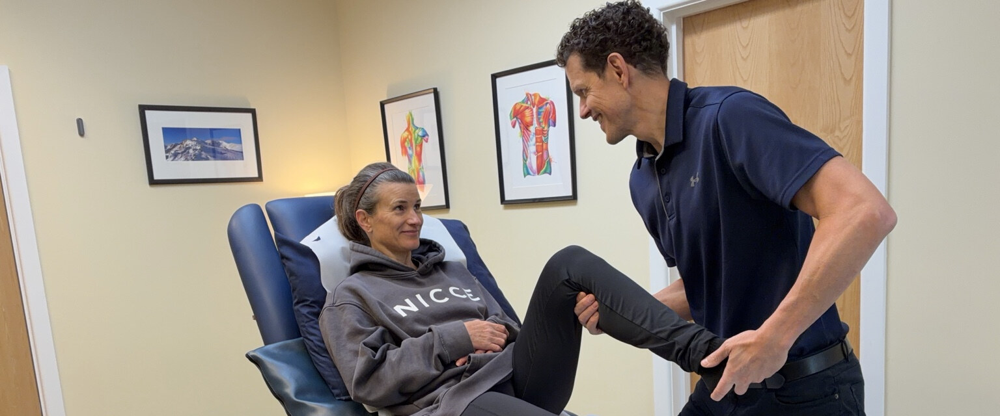
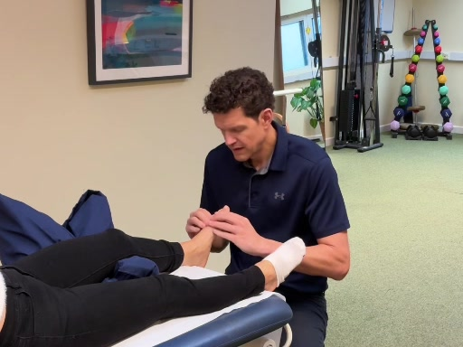
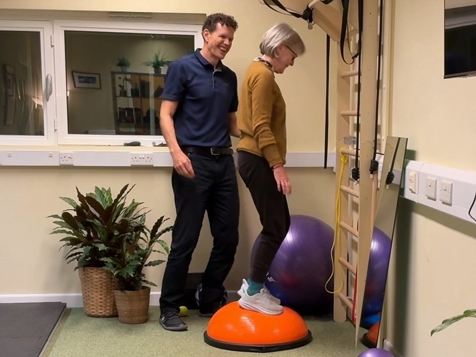
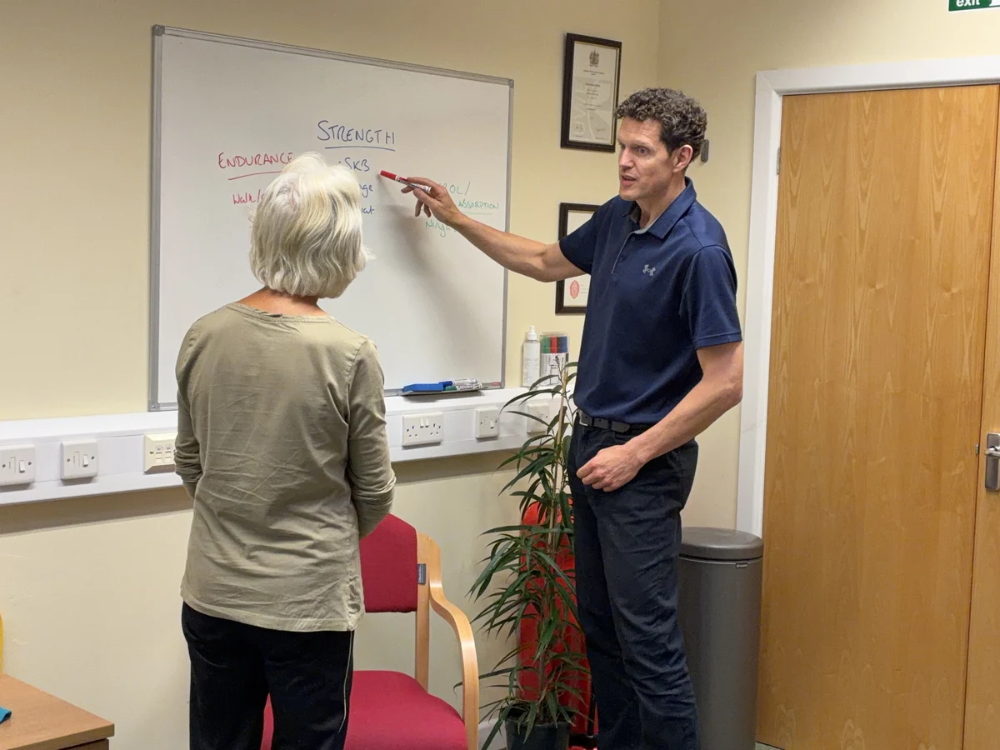
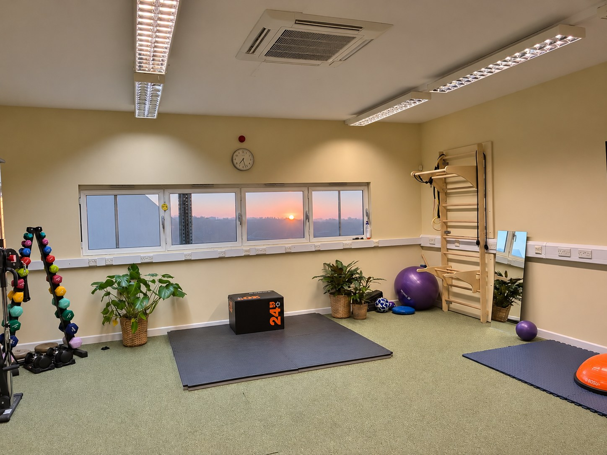
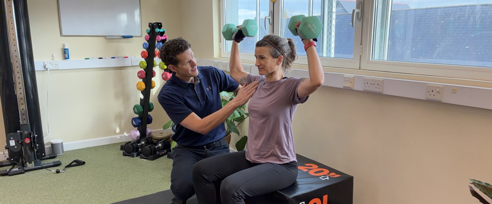

Pain or injuryholding you back?Let’s find a way forward.
Whether it’s a new injury, a problem that keeps returning or something you’ve been living with for a while, I’ll help you understand what’s happening and find a way forward. Together, we’ll work towards moving more comfortably and getting back to the things that matter to you.
Glasshouse Studios · FordingbridgeNearly 30 years of clinical experience

Does this sound like you?
You do not need to know the exact diagnosis before you come. Your assessment looks beyond the painful area to understand how the problem is affecting your movement, confidence and everyday life.
Problems I commonly help with
01Shoulder, arm and elbow pain+
Shoulder or arm pain can make sleeping, dressing, reaching, lifting and exercise difficult. It may have started with an injury, built gradually or simply failed to settle.
We’ll look at movement, strength, sensitivity and whether the neck or upper back may be contributing. Treatment may combine hands-on therapy, purposeful exercise and practical advice for the activities you want to regain.
02Back and neck pain+
Back and neck problems can affect sleep, work, driving, walking and confidence in everyday movement—particularly when symptoms keep returning.
Your assessment considers how the problem behaves, what feels reassuring and which movements, loads or habits may be useful to change. The aim is a manageable route back, not an overwhelming list of restrictions.
03Hip and knee problems+
Hip or knee pain may begin to limit walking, stairs, getting out of a chair, sport or time spent on your feet.
We’ll assess the joint, how you move and what your leg can comfortably manage, then agree where to start. Where appropriate, I can also help you understand when imaging, an injection or a surgical opinion may be worth discussing.
04Foot, ankle and tendon pain+
Achilles, heel, foot and ankle problems can be stubborn—especially when they interfere with walking, running or the exercise that matters to you.
Assessment helps identify what the area can currently tolerate. Treatment usually involves careful management of load, progressive strengthening and a gradual return to activity, with hands-on treatment where it has a useful role.
05Before and after surgery+
Good rehabilitation can help you prepare for surgery and rebuild movement, strength and confidence afterwards.
Your programme will reflect the operation, your surgeon’s guidance and the demands of your everyday life. We’ll check your progress and adjust your exercises as you can comfortably do more.
06Persistent or recurring pain+
Sometimes pain lingers, repeatedly flares or has not responded as hoped to previous treatment. That does not mean there is nothing more to understand or improve.
We’ll take a fresh look at the full picture, including movement, strength, sensitivity, confidence and the effect the problem is having on your life. If another opinion or investigation appears appropriate, I’ll explain why.
Read independent Google reviews from patients Justin has helped in Fordingbridge and the surrounding area.
Your first appointment
Time to listen. Time to understand.
An initial appointment lasts up to an hour, with time to listen, assess and explain. You’ll leave with a clear explanation and practical next steps. Where appropriate, we’ll begin treatment and practise your first exercises during the appointment.
01
Your story
We discuss what has happened, how it affects you and what you would most like to change.
02
A thoughtful assessment
We’ll look at how you move, check your strength and explore what feels difficult or uncomfortable.
03
A clear explanation
I explain what I think is contributing, what appears reassuring and where uncertainty remains.
04
Your next steps
We agree a manageable plan. This may include treatment, exercise, activity changes or onward referral.
A practical, balanced approach
The right treatment for you.
Physiotherapy is rarely about one single treatment. Depending on what you need, your care may combine hands-on treatment, purposeful exercise and clear explanation. Each has a different role, and the balance between them will be personal to you.

01
Hands-on treatment
Manual therapy can help reduce pain, ease stiffness and make movement feel more comfortable.
I may use joint or soft-tissue techniques when they are likely to help—but always as part of a wider plan, rather than treatment for treatment’s sake.

02
Purposeful exercise
Exercise helps restore movement, rebuild strength and gradually increase what your body can manage.
Your programme will be shaped around your problem, your goals and the equipment and time you actually have—not a generic sheet of exercises.

03
Understanding and prevention
Understanding what is happening can make a real difference.
We’ll discuss what may be contributing to the problem, how to manage flare-ups and what you can do to reduce the likelihood of it returning. The aim is to leave you feeling informed and increasingly confident managing things yourself.
Hands-on help when you need it.Exercises that aren’t overwhelming.A clear plan for moving forward.
Space to put it into practice
More than a treatment room.
The rehabilitation space at Glasshouse Studios gives us room to work on the things you want to get back to, with me alongside you.
Practise·Build·Grow in confidence
We can work on strength, balance, walking and everyday movements, then gradually introduce the demands of your hobbies, exercise or sport. I can watch how you move, help you find a useful level of challenge and adapt things as you progress.
You don’t need to be a gym person. We start with what you can manage and build from there.
The clinic is where we learn, test and progress. Home is where you practise little and often, making the plan part of everyday life.

The right amount of support
A little bit of guidance. Or someone alongside you.
Some people need one or two appointments. Others benefit from a period of regular rehabilitation. Both are completely normal.
01
A little guidance
An assessment, a clear explanation and a practical plan may be enough to help you move forward. A review can help you check progress and make any useful adjustments.
02
Guided rehabilitation
You practise your programme at home, with appointments at agreed intervals to check progress, refine your technique and move your exercises on. I’ll help you judge when to do more and how to manage any setbacks.
03
More regular support
Regular one-to-one sessions give you time to exercise and practise with me alongside you. This can help when you need closer guidance or confidence getting started. As you feel more able to continue yourself, we’ll review how much support you need.
You don’t need to choose a level of support before you come. I’ll explain what I think would help, give you the options, and we’ll decide together how much support is right for you.

A few useful answers
Before you come in.
Do I need a GP referral?+
No. You can book directly. If assessment suggests that medical investigation or another opinion would be helpful, I will explain why.
What should I wear?+
Wear or bring something comfortable that allows the relevant area and movements to be assessed. Shorts can be useful for hip, knee, leg or ankle problems.
How many appointments will I need?+
That depends on the problem and your goals. I will give you an honest view after assessment and review progress rather than booking treatment by formula.